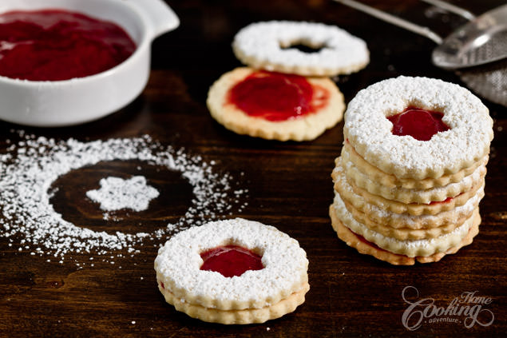
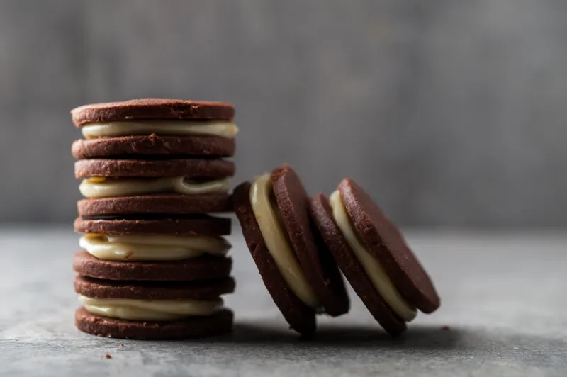

The word "biscuit" is derived from the Latin panis biscoctus, "twice-baked bread." From the sixteenth to the eighteenth century, forms of the word included besquite and bisket. Similar forms are noted in many European languages. "Biscuit" covers a wide range of flour baked products, though it is generally an unleavened cake or bread, crisp and dry in nature, and in a small, thin, and flat shape. It has a number of cultural meanings. In the United States, a biscuit is a soft, thick scone product or a small roll similar to a muffin. The British biscuit is equivalent to the American cookie and cracker. These latter terms are relatively modern. "Cookie" comes from the eighteenth-century Dutch word koekje, a diminutive of koek (cake). "Cracker" is a North American term that also came into use in the eighteenth century, connoting the sound of the wafer as it was chewed or broken (at this time, "cracker" was also used to mean a firecracker or a noisy person or object). Biscuits have evolved from different aspects of baking practices such as tarts, pastries, short cakes, and sugar confectionery. They have given rise to the wafer, macaroon, cracker, sandwich, snap, gingerbread, honey cake, rusk, and water biscuit. Some, like the wafer, were baked in the Middle Ages; others are of more recent origin, such as the "fancy biscuit," an early-nineteenth-century invention of British bakers that led to the development of a biscuit industry, which was later exported throughout the world.
 